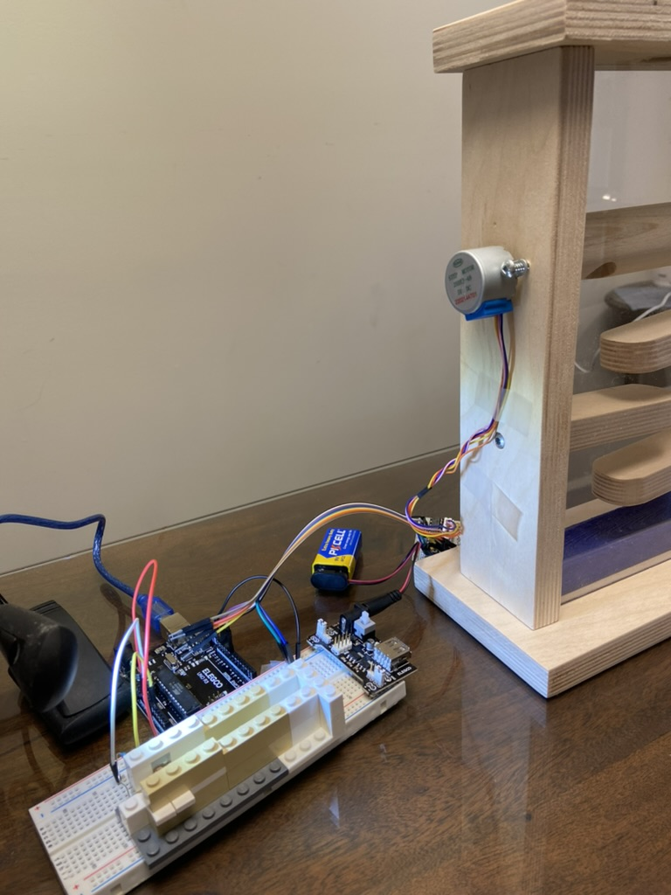
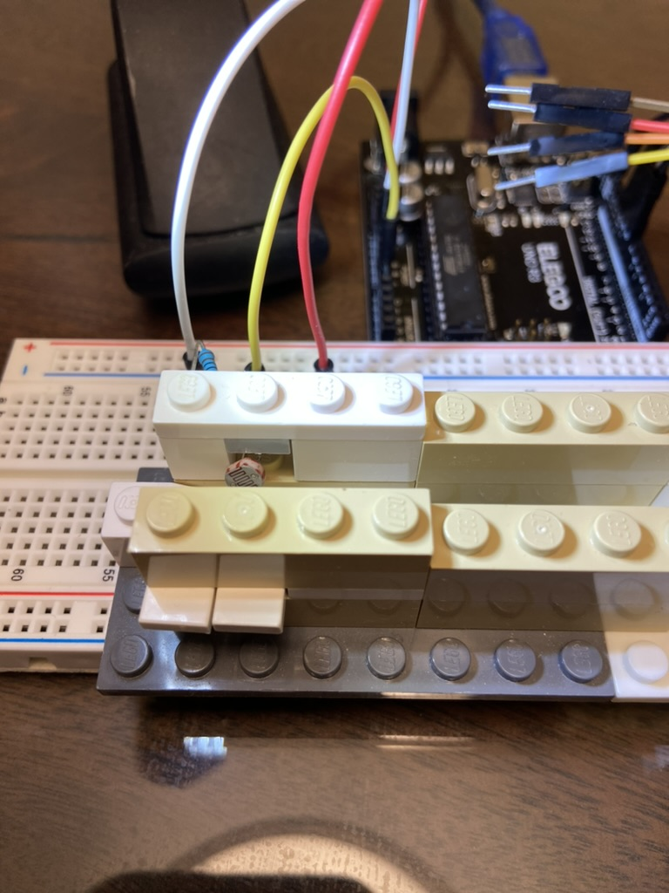
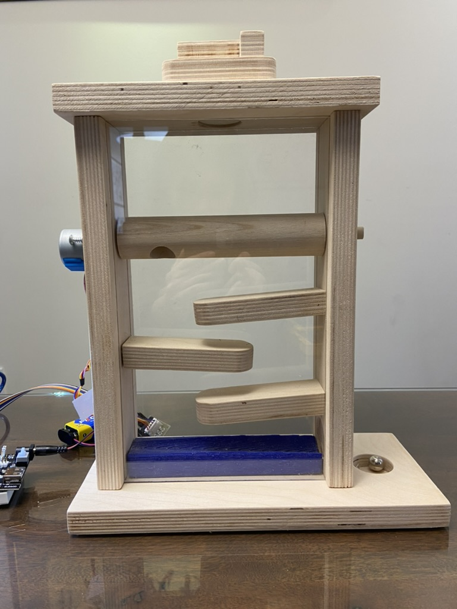

ARDUINO POWERED GUMBALL MACHINE
materials
| Name | Quantity |
|---|---|
| arduino uno | 1 x |
| stepper motor | 1 x |
| stepper motor driver | 1 x |
| light dependent resistor | 1 x |
| 1k ohm resistor | 1 x |
| breadboard | 1 x |
| power supply module | 1 x |
| battery & battery adapter | 1 x |
| male to male wires | 4 x |
| male to female wires | 6 x |
| plywood planks | cut into respective pieces for the gumball machine |
| acrylic plastic | 2 x |
main components
The primary components of the gumball machine consists of the stepper motor, the light dependent resistor, which detects the presence of the coin, and the physical machine itself.
1) STEPPER MOTOR

The stepper motor is connected to a hole in the dowel. When the motor turns, the dowel rotates, releasing the gumball down the ramp.
2) LIGHT DEPEDENT RESISTOR

The light dependent resistor detects the amount of light it recieves. An additional light source must be used because there is not enough brightness for the LDR to detect a light change when the coin is inserted.
3) MACHINE

The machine is constructed using a wooden dowel, plywood, and acrylic plastic. Machinery used: bandsaw, drill press, hand drill, belt sander.